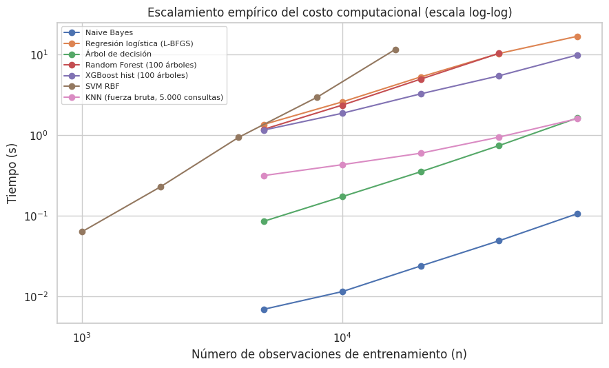

9. Eficiencia computacional, reproducibilidad y conclusiones#
Mostrar código
import json
import sys
from pathlib import Path
import numpy as np
import pandas as pd
import matplotlib.pyplot as plt
import seaborn as sns
sys.path.insert(0, str(Path.cwd().parent / "scripts"))
from _utils import configurar_tablas
configurar_tablas()
RESULTS3 = Path.cwd().parent / "resultados"
sns.set_theme(style="whitegrid", context="notebook")
tabla = pd.read_csv(RESULTS3 / "tabla_maestra.csv", encoding="utf-8-sig")
aplic = tabla[tabla["aplicable"]].copy()
9.1 Complejidad algorítmica y tiempo empírico#
La tabla siguiente resume la complejidad asintótica de entrenamiento e inferencia de cada algoritmo en función del número de observaciones \(n\), del número de predictoras \(p\), del número de árboles \(T\), de su profundidad \(d\) y del número de vectores de soporte \(n_{sv}\).
Algoritmo |
Entrenamiento |
Inferencia (por observación) |
|---|---|---|
KNN (fuerza bruta) |
\(O(1)\): solo almacena los datos |
\(O(n \cdot p)\) |
Naive Bayes gaussiano |
\(O(n \cdot p)\) |
\(O(p \cdot K)\), con \(K\) clases |
Regresión logística |
\(O(n \cdot p \cdot K)\) por iteración (L-BFGS) o por época (SAGA) |
\(O(p \cdot K)\) |
Árbol de decisión |
\(O(n \cdot p \cdot \log n)\) |
\(O(d)\) |
Random Forest |
\(O(T \cdot n \cdot \sqrt{p} \cdot \log n)\) |
\(O(T \cdot d)\) |
XGBoost ( |
\(O(T \cdot K \cdot n \cdot p)\) con histogramas de 256 intervalos |
\(O(T \cdot K \cdot d)\) |
SVM (núcleo RBF) |
Entre \(O(n^2 \cdot p)\) y \(O(n^3)\) |
\(O(n_{sv} \cdot p)\) |
Para contrastar la teoría con el comportamiento observado se midió el tiempo de entrenamiento (o de inferencia, en el caso de KNN) con submuestras crecientes de la misma partición y se estimó el exponente empírico de escalamiento \(b\) mediante la regresión \(\log t = a + b \log n\).
Mostrar código
esc = pd.read_csv(RESULTS3 / "escalamiento_tiempos.csv", encoding="utf-8-sig")
expo = pd.read_csv(RESULTS3 / "escalamiento_exponentes.csv", encoding="utf-8-sig")
fig, ax = plt.subplots(figsize=(9, 5.5))
for nombre, g in esc.groupby("modelo", sort=False):
ax.plot(g["n"], g["tiempo_s"], "o-", label=nombre)
ax.set(xscale="log", yscale="log", xlabel="Número de observaciones de entrenamiento (n)",
ylabel="Tiempo (s)", title="Escalamiento empírico del costo computacional (escala log-log)")
ax.legend(fontsize=8)
plt.tight_layout()
plt.show()
expo.columns = ["Algoritmo", "Fase medida", "Exponente empírico b"]
expo["Fase medida"] = expo["Fase medida"].map({"fit": "entrenamiento", "predict": "inferencia"})
display(expo.set_index("Algoritmo").round(2))

| Algoritmo | Fase medida | Exponente empírico b |
|---|---|---|
| Naive Bayes | entrenamiento | 1.00 |
| Regresión logística (L-BFGS) | entrenamiento | 0.93 |
| Árbol de decisión | entrenamiento | 1.06 |
| Random Forest (100 árboles) | entrenamiento | 1.05 |
| XGBoost hist (100 árboles) | entrenamiento | 0.77 |
| SVM RBF | entrenamiento | 1.87 |
| KNN (fuerza bruta, 5.000 consultas) | inferencia | 0.58 |
Los exponentes son consistentes con la teoría:
SVM con núcleo RBF (\(b = 1{,}87\)) muestra el crecimiento casi cuadrático esperado: al duplicar \(n\), el tiempo se multiplica por cerca de 3,7. Extrapolado a las 40.000 filas del benchmark, su entrenamiento sería unas 16 veces más costoso que con 9.000 filas, lo que justifica la submuestra separada de la sección 5.1.
El árbol de decisión y Random Forest (\(b \approx 1{,}05\)) escalan de forma ligeramente superlineal, como corresponde al término \(n \log n\) de la ordenación de los valores candidatos a corte.
Naive Bayes (\(b = 1{,}00\)) es exactamente lineal, porque su entrenamiento se reduce a calcular medias y varianzas por clase.
La regresión logística (\(b = 0{,}93\)) y XGBoost con histogramas (\(b = 0{,}77\)) escalan de forma sublineal en este rango porque una parte importante de su costo es fija o depende de la convergencia: el número de iteraciones de L-BFGS disminuye con más datos y XGBoost amortiza la construcción de los histogramas.
La inferencia de KNN (\(b = 0{,}58\)) crece menos que la \(O(n)\) teórica porque el cálculo de distancias por fuerza bruta se vectoriza con operaciones matriciales optimizadas (BLAS), cuyo rendimiento por operación aumenta con el tamaño del problema.
En el benchmark, Random Forest acumuló el mayor tiempo total (34.323 s en 16 combinaciones), seguido de XGBoost (23.085 s), y Naive Bayes el menor (5.258 s).
9.2 Implementaciones estándar frente a optimizadas#
Para cada algoritmo se comparó una implementación estándar con una alternativa diseñada
para reducir el costo computacional. Todas las versiones se entrenaron con la submuestra
de 40.000 filas del benchmark (9.000 en el caso de la SVM con núcleo RBF) y se evaluaron
sobre la misma submuestra estratificada de 20.000 celdas de la prueba reservada. Los
tiempos son de reloj de pared (mediana de tres repeticiones, excepto KNN, XGBoost y SVM,
con una) y la memoria pico se midió con tracemalloc.
Mostrar código
comp = pd.read_csv(RESULTS3 / "computacional_estandar_vs_optimizado.csv", encoding="utf-8-sig")
with open(RESULTS3 / "computacional_entorno.json", encoding="utf-8") as f:
entorno = json.load(f)
comp = comp.rename(columns={"modelo": "Algoritmo", "versión": "Versión", "complejidad_teórica": "Complejidad teórica",
"n_entrenamiento": "n",
"tiempo_entrenamiento_s": "Entrenamiento (s)", "tiempo_inferencia_s": "Inferencia (s)",
"memoria_pico_entrenamiento_MB": "Memoria pico (MB)", "F1_macro": "F1 macro"})
comp["n"] = comp["n"].map(lambda v: f"{v:,}".replace(",", "."))
display(comp.style.hide(axis="index").format(
{"Entrenamiento (s)": "{:.2f}", "Inferencia (s)": "{:.3f}", "Memoria pico (MB)": "{:.1f}", "F1 macro": "{:.3f}"}))
print("* Solo en baja dimensión; con p alto la búsqueda degrada hacia O(n·p).")
print(f"Entorno de medición: Python {entorno['python']}, {entorno['nucleos_logicos']} núcleos lógicos, "
f"{entorno['n_prueba']:,} celdas de prueba".replace(",", "."))
| Algoritmo | Versión | Complejidad teórica | n | Entrenamiento (s) | Inferencia (s) | Memoria pico (MB) | F1 macro |
|---|---|---|---|---|---|---|---|
| KNN (k = 5) | Estándar: fuerza bruta | O(n·p) por consulta | 40.000 | 0.02 | 3.988 | 20.2 | 0.744 |
| KNN (k = 5) | Optimizada: KD-Tree | O(log n)* por consulta | 40.000 | 0.57 | 18.070 | 20.8 | 0.744 |
| KNN (k = 5) | Optimizada: Ball Tree | O(log n)* por consulta | 40.000 | 0.35 | 96.959 | 20.2 | 0.744 |
| Naive Bayes | Estándar: fit en bloque | O(n·p) | 40.000 | 0.06 | 0.051 | 18.3 | 0.135 |
| Naive Bayes | Optimizada: partial_fit (lotes de 5.000) | O(n·p); memoria O(b·p) | 40.000 | 0.06 | 0.047 | 2.4 | 0.136 |
| Regresión logística (L2) | Estándar: L-BFGS (tol. 1e-4) | O(n·p·K) por iteración | 40.000 | 9.74 | 0.009 | 23.5 | 0.577 |
| Regresión logística (L2) | Optimizada: SAGA (tol. 1e-2) | O(n·p·K) por época | 40.000 | 2.37 | 0.006 | 21.8 | 0.572 |
| XGBoost (200 árboles) | Estándar: exact | O(T·n·p·log n) | 40.000 | 165.07 | 1.071 | 6.4 | 0.839 |
| XGBoost (200 árboles) | Optimizada: hist | O(T·n·p) | 40.000 | 14.13 | 1.018 | 6.6 | 0.835 |
| XGBoost (200 árboles) | Optimizada: hist + parada temprana | O(T*·n·p), T* ≤ T | 34.000 | 20.77 | 1.487 | 9.1 | 0.828 |
| SVM | Estándar: SVC RBF | O(n²·p) a O(n³) | 9.000 | 4.58 | 10.738 | 8.4 | 0.653 |
| SVM | Optimizada: LinearSVC | O(n·p) por época | 40.000 | 1.88 | 0.006 | 19.9 | 0.498 |
| SVM | Optimizada: SGD (bisagra) | O(n·p) por época | 40.000 | 2.43 | 0.006 | 19.2 | 0.501 |
* Solo en baja dimensión; con p alto la búsqueda degrada hacia O(n·p).
Entorno de medición: Python 3.10.20. 2 núcleos lógicos. 20.000 celdas de prueba
Los resultados muestran que la optimización computacional depende de la estructura del problema, y no solo del algoritmo:
XGBoost: el método
histreduce el tiempo de entrenamiento 11,7 veces (de 165 s a 14 s) con una pérdida de F1 macro de 0,005. Al discretizar cada variable en un máximo de 256 intervalos, la búsqueda del mejor corte deja de depender del número de valores distintos. La parada temprana con un conjunto de validación interno (15 % del entrenamiento, 20 rondas de paciencia) no redujo el costo en esta configuración: el tiempo indica que el criterio se activó después de las 200 iteraciones fijadas en el finalista. Su utilidad es evitar fijar a priori el número de árboles.KNN: las estructuras de indexación son contraproducentes con 57 dimensiones. El KD-Tree multiplicó el tiempo de inferencia por 4,5 y el Ball Tree por 24 respecto de la búsqueda exhaustiva, con el mismo F1. En alta dimensión, las cajas y esferas que estas estructuras usan para descartar regiones dejan de excluir puntos (maldición de la dimensionalidad), y el recorrido del árbol añade sobrecarga a una búsqueda que termina siendo casi exhaustiva. La búsqueda aproximada de vecinos (por ejemplo, FAISS) es la alternativa adecuada para este régimen: sacrifica exactitud en la identificación de los vecinos a cambio de un costo sublineal por consulta.
Naive Bayes:
partial_fitreduce la memoria pico 7,6 veces (de 18,3 MB a 2,4 MB) con el mismo tiempo y el mismo F1, porque solo mantiene en memoria un lote de 5.000 filas y las estadísticas suficientes acumuladas. Es la opción adecuada cuando el conjunto de datos no cabe en memoria.Regresión logística: SAGA con tolerancia relajada es 4,1 veces más rápido que L-BFGS llevado a convergencia, con una pérdida de F1 de 0,005. SAGA recorre los datos por épocas con costo lineal en \(n\), y en problemas grandes alcanza una solución útil con pocas épocas.
SVM: las formulaciones lineales reducen el costo pero no son una alternativa válida en este problema. LinearSVC y el descenso de gradiente estocástico entrenan con 40.000 filas en el 41 % y el 53 % del tiempo que requiere el núcleo RBF con 9.000, y predicen unas 1.800 veces más rápido, pero su F1 macro cae de 0,653 a 0,50. Las fronteras entre clases son no lineales, y eliminar el núcleo elimina justamente la capacidad del modelo para representarlas.
Nota
tracemalloc registra las asignaciones de memoria realizadas a través del intérprete de
Python, incluidas las de NumPy, pero no las que hacen directamente las bibliotecas
nativas como XGBoost. Las cifras de memoria de XGBoost subestiman, por tanto, su consumo
real; son comparables entre sus versiones, pero no con las de otros algoritmos.
Costo de la optimización de hiperparámetros del finalista#
La comparación siguiente, ejecutada en la estación de trabajo del benchmark, contrasta un XGBoost con los hiperparámetros por defecto de la librería (100 árboles, profundidad 6) con el finalista optimizado (200 árboles, profundidad 8), ambos entrenados con las 464.809 filas y evaluados en la prueba reservada completa.
Mostrar código
perfil = pd.read_csv(RESULTS3 / "finalista_perfilamiento.csv", encoding="utf-8-sig")
perfil.columns = ["Versión", "Entrenamiento (s)", "Inferencia (s)", "Memoria pico de entrenamiento (MB)",
"Memoria pico de inferencia (MB)", "F1 macro en prueba"]
display(perfil.set_index("Versión").round(3))
| Versión | Entrenamiento (s) | Inferencia (s) | Memoria pico de entrenamiento (MB) | Memoria pico de inferencia (MB) | F1 macro en prueba |
|---|---|---|---|---|---|
| estándar (sin ajustar) | 180.793 | 3.821 | 639.637 | 374.73 | 0.866 |
| optimizado (finalista) | 919.640 | 6.207 | 639.629 | 374.71 | 0.927 |
La versión por defecto ya es competitiva (F1 macro de 0,866) y entrena en la quinta parte del tiempo del finalista (181 s frente a 920 s), porque usa la mitad de los árboles y una profundidad menor. La optimización aumenta el F1 macro en 0,061, hasta 0,927, a cambio de multiplicar por 5,1 el tiempo de entrenamiento y por 1,6 el de inferencia (6,2 s para 116.203 celdas, es decir, unos 53 µs por celda). El consumo de memoria registrado es prácticamente idéntico en ambas versiones (≈ 640 MB en el entrenamiento), porque está dominado por la matriz de datos y no por el tamaño del modelo.
Sensibilidad del finalista a la semilla#
Mostrar código
semillas = pd.read_csv(RESULTS3 / "finalista_sensibilidad_semilla.csv", encoding="utf-8-sig")
semillas.columns = ["Semilla", "F1 macro"]
display(semillas.set_index("Semilla").round(4).T)
print(f"Media: {semillas['F1 macro'].mean():.4f} · Desviación estándar: {semillas['F1 macro'].std():.4f}")
| Semilla | 0 | 1 | 2 | 3 | 4 |
|---|---|---|---|---|---|
| F1 macro | 0.931 | 0.9285 | 0.9283 | 0.9299 | 0.9304 |
Media: 0.9296 · Desviación estándar: 0.0012
Con los hiperparámetros del finalista (subsample = 1 y colsample_bytree = 1, los
valores por defecto), el entrenamiento de XGBoost es determinista y cinco semillas
producirían el mismo modelo. Para que la prueba tuviera una fuente real de aleatoriedad,
este experimento fija subsample = 0,8 y colsample_bytree = 0,8, de modo que cada árbol
usa una muestra aleatoria del 80 % de las filas y de las columnas. Con esa aleatoriedad
introducida, la desviación estándar entre semillas es de 0,0012 sobre un F1 macro medio
de 0,930, un orden de magnitud menor que las diferencias entre familias de algoritmos
(capítulo 7). Junto con la estabilidad del TPE ante la semilla (sección 6.4), este
resultado indica que las conclusiones del estudio no dependen de la semilla elegida.
9.3 Paralelización y reproducibilidad#
Paralelización. Las 112 combinaciones se distribuyeron entre algoritmos: cada uno
de los siete se ejecutó en un proceso independiente de Python en una estación de trabajo
con 12 hilos lógicos, mientras que cada estimador se entrenó con n_jobs = 1. En una
prueba preliminar, la paralelización interna de cada ajuste (n_jobs = -1 en
RandomForestClassifier o XGBClassifier) resultó más lenta, porque el costo fijo de
crear un conjunto de procesos de joblib en cada uno de los miles de ajustes pequeños de
la validación anidada superaba el ahorro obtenido. Paralelizar al nivel de algoritmo
mantiene ocupados los núcleos durante toda la ejecución sin pagar ese costo de forma
repetida. El paso natural para escalar el benchmark sería distribuir las combinaciones,
y no los ajustes, con un planificador como Dask o Ray; la aceleración por GPU de XGBoost
(device="cuda") no se evaluó porque la estación de trabajo no dispone de una GPU
compatible.
Registro estructurado de experimentos. Cada una de las 112 combinaciones queda
registrada en resultados/benchmark_log_<MODELO>.jsonl con los
hiperparámetros elegidos en cada pliegue externo, el F1 macro y la accuracy de cada
pliegue, el tiempo de cada pliegue, el número de evaluaciones y, en el algoritmo
genético, la diversidad de la población por generación. El archivo tabla_maestra.csv
consolida esos registros y es la fuente de los capítulos 5 a 9. El registro incremental
permitió reanudar la ejecución tras interrupciones sin repetir combinaciones ya
completadas.
Reducción del espacio de búsqueda durante la ejecución. Tras medir que algunas
combinaciones individuales tardaban entre 20 y 30 minutos, se redujo el espacio de
búsqueda de Random Forest (de n_estimators ∈ {100, 200, 300} × max_depth ∈ {10, 20,
sin límite} a {100, 200} × {10, 20}) y de XGBoost (de {100, 200} × {4, 6, 8} × {0,05;
0,1; 0,2} a {100, 150} × {4, 6} × {0,05; 0,1}), y los presupuestos de Random Search,
optimización bayesiana y algoritmo genético pasaron de 8, 10 y (6 individuos, 3
generaciones) a 6, 6 y (4 individuos, 2 generaciones). Las combinaciones de Grid y Random
Search de Random Forest y XGBoost sin balanceo, así como nueve corridas del algoritmo
genético, ya se habían completado con la configuración inicial. Esta decisión, tomada por
restricciones de tiempo de cómputo, introduce la asimetría documentada en las secciones
5.2 y 5.5.
Semillas y entorno. La semilla global (RANDOM_STATE = 42) se propaga a todas las
fuentes de aleatoriedad, y las versiones de las librerías están fijadas en
requirements.txt (apéndice A). Los experimentos complementarios de las secciones 6.4,
8.1, 8.2, 9.1, 9.2 y 9.4 se ejecutaron con las mismas versiones de las librerías en un entorno Linux
de dos núcleos; sus tiempos absolutos no son comparables con los del benchmark, pero sí
las comparaciones internas de cada experimento.
9.4 Revisión crítica del desempeño del finalista#
El finalista supera el 90 % de accuracy (0,940), el umbral a partir del cual un desempeño alto obliga a descartar fuga de información, a compararlo con la línea base y a verificar que la validación respete la estructura de los datos (sección 3.11).
Fuga de información. El finalista usa exactamente las 57 predictoras auditadas en la sección 2.5, sin identificadores ni variables derivadas de la cobertura. Su variable más importante es la elevación (capítulo 8), cuya relación con la cobertura es el gradiente altitudinal de la vegetación de montaña, no una fuga.
Comparación con la línea base trivial. El clasificador de la clase más frecuente obtiene 0,488 de accuracy y 0,094 de F1 macro (sección 3.2); el finalista lo supera en 0,45 y 0,83 unidades, respectivamente. Con clases desbalanceadas, la mejora en F1 macro descarta que el accuracy refleje solo la proporción de las clases mayoritarias.
Estructura espacial. La validación con partición aleatoria es optimista para zonas no muestreadas (sección 2.7). Por ello se repitió con el finalista la prueba de la sección 3.8: validación con
GroupKFold, dejando fuera un área silvestre completa en cada pliegue, sobre la misma submuestra de 60.000 celdas.
Mostrar código
areas = pd.read_csv(RESULTS3 / "finalista_areas_no_vistas.csv", encoding="utf-8-sig")
tab_areas = areas.pivot_table(index="área_no_vista", columns="modelo",
values=["accuracy", "f1_macro_clases_presentes"])
tab_areas.columns = [f"{'Accuracy' if m == 'accuracy' else 'F1 macro (clases presentes)'} · {mod}"
for m, mod in tab_areas.columns]
tab_areas.loc["Promedio"] = tab_areas.mean()
tab_areas.index.name = "Área no vista"
display(tab_areas.round(3))
| Área no vista | Accuracy · Regresión logística | Accuracy · XGBoost (finalista) | F1 macro (clases presentes) · Regresión logística | F1 macro (clases presentes) · XGBoost (finalista) |
|---|---|---|---|---|
| Cache la Poudre | 0.530 | 0.411 | 0.389 | 0.291 |
| Comanche Peak | 0.572 | 0.575 | 0.375 | 0.265 |
| Neota | 0.563 | 0.512 | 0.429 | 0.443 |
| Rawah | 0.585 | 0.580 | 0.373 | 0.381 |
| Promedio | 0.563 | 0.519 | 0.392 | 0.345 |
El resultado es concluyente: la ventaja del finalista no se traslada a áreas no vistas. Al predecir un área silvestre completa, XGBoost obtiene una accuracy media de 0,52 y un F1 macro de 0,35 sobre las clases presentes, por debajo de la regresión logística (0,56 y 0,39). La diferencia es máxima en Cache la Poudre (0,41 frente a 0,53), el área con la composición más distinta y la única con álamo/sauce, mientras que en Rawah y Comanche Peak, las dos áreas grandes, la accuracy de ambos modelos es prácticamente igual. El modelo de boosting aprende interacciones finas entre elevación, suelo y área que son válidas dentro de cada área pero no se transfieren a otra; el modelo lineal, más rígido, extrapola algo mejor. Los valores de la regresión logística reproducen, con diferencias menores a 0,01, los de la sección 3.8.
Esta prueba no indica fuga de información, sino que delimita el dominio de validez del modelo: el desempeño reportado en la prueba reservada (F1 macro de 0,927) corresponde a celdas no vistas dentro de las áreas muestreadas, que es el uso previsto del modelo (sección 2.7), y no a regiones nuevas.
Complejidad del problema. El problema no es trivial: el mejor modelo lineal se queda en un F1 macro de 0,56, las dos clases mayoritarias se solapan en todas las variables y la mejora del finalista se explica por su capacidad de modelar interacciones no lineales, como muestra el análisis SHAP del capítulo 8.
9.5 Limitaciones#
Generalización geográfica. El desempeño reportado corresponde a celdas no vistas dentro de las cuatro áreas silvestres muestreadas. Al predecir un área completa no incluida en el entrenamiento, la accuracy del finalista cae a 0,52, por debajo de la regresión logística (sección 9.4), y el modelo no debe aplicarse a otras regiones sin datos locales.
Benchmark sobre una submuestra. Las 112 combinaciones se evaluaron con 40.000 filas (9.000 para la SVM). El orden entre familias podría cambiar con el conjunto completo, en particular para algoritmos que se benefician más del volumen de datos, aunque el finalista sí se reentrenó con las 464.809 filas.
Espacios de búsqueda reducidos y asimétricos. Los espacios son pequeños y discretos, y su reducción durante la ejecución favoreció a XGBoost sin balanceo frente a las demás variantes de XGBoost. Una búsqueda más amplia podría mejorar cualquiera de los siete algoritmos, y el efecto del balanceo en XGBoost debe interpretarse con cautela.
Potencia estadística. Tres pliegues externos son insuficientes para que la prueba de Nemenyi discrimine entre las combinaciones, y solo permiten declarar significativa la diferencia entre la mejor y la peor familia.
Ausencia de coordenadas. Sin latitud ni longitud no es posible medir la autocorrelación espacial de los residuos ni construir bloques espaciales finos. La validación por área silvestre es una aproximación gruesa a la validación espacial.
Antigüedad y calidad de las etiquetas. La cartografía es anterior a 1998 y las etiquetas provienen de un sistema de información del USFS, no de un inventario de campo celda por celda.
9.6 Conclusiones#
Las variables cartográficas permiten predecir la cobertura forestal con alta precisión dentro de las áreas muestreadas. El finalista, XGBoost sin balanceo, alcanza en la prueba reservada un F1 macro de 0,927 (IC 95 %: 0,923–0,931), una accuracy de 0,940 y un AUC uno-contra-el-resto de 0,997, con un recall superior a 0,82 en las siete clases y probabilidades bien calibradas (Brier de 0,097; ECE medio de 0,012).
La mejora frente al modelo lineal es estadísticamente significativa y de magnitud máxima. El F1 macro aumenta 0,371 unidades respecto de la regresión logística, con intervalos de confianza separados, superioridad en las siete clases según la prueba de DeLong con corrección de Holm y un delta de Cliff igual a 1 en los pliegues externos. La limitación del modelo base era de sesgo, y un modelo capaz de representar interacciones no lineales la resuelve.
Los métodos de conjunto basados en árboles son la familia dominante, con un orden de algoritmos idéntico en los tres pliegues externos (XGBoost, Random Forest, KNN, árbol de decisión, SVM, regresión logística y Naive Bayes). Las estrategias de balanceo no mejoraron a los mejores algoritmos: con un criterio de selección como el F1 macro y modelos suficientemente flexibles, el desbalance se gestiona sin alterar la distribución de entrenamiento.
La eficacia de los métodos de optimización depende del espacio de búsqueda. En espacios discretos y pequeños, Grid Search y Random Search fueron más eficaces y eficientes que los métodos dirigidos. En un espacio de cinco dimensiones con 30 evaluaciones, la optimización bayesiana alcanzó la mejor solución, con la menor variabilidad entre semillas. Successive Halving redujo el costo en un 92 % sin pérdida de calidad.
La elevación es el determinante principal de la cobertura, tanto en la regresión logística como en XGBoost, seguida de la elevación relativa a la red hidrográfica, la distancia a carreteras y el área silvestre. La coincidencia entre dos modelos de naturaleza distinta refuerza que se trata de una propiedad del fenómeno y no de un artefacto de un modelo particular.
El dominio de validez del modelo son las áreas muestreadas. Al predecir un área silvestre completa no vista, el finalista pierde su ventaja y queda por debajo de la regresión logística (accuracy de 0,52 frente a 0,56): las interacciones que aprende son específicas de cada área. Generalizar a otras regiones requiere datos de entrenamiento locales o modelos con restricciones que favorezcan la extrapolación.
La eficiencia computacional depende de la estructura del problema. El método
histde XGBoost redujo el tiempo de entrenamiento en un orden de magnitud sin pérdida apreciable de desempeño, mientras que las estructuras de indexación de KNN resultaron contraproducentes con 57 dimensiones y las formulaciones lineales de la SVM perdieron la capacidad de representar las fronteras no lineales.